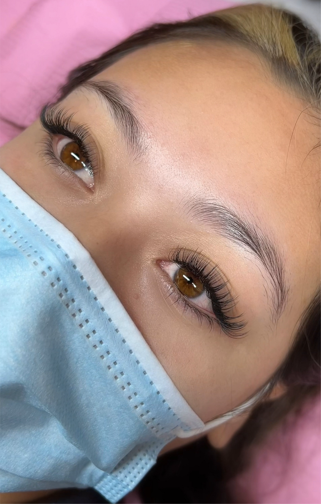
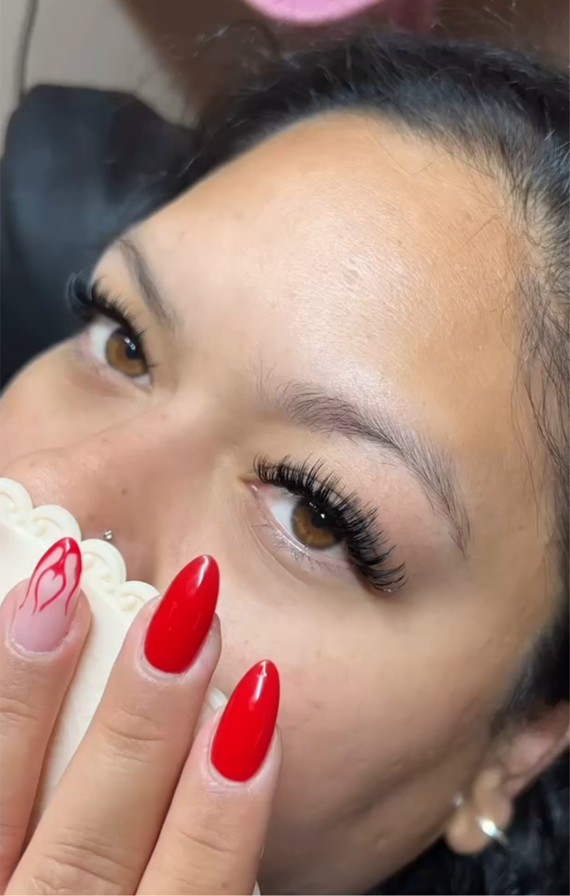

Classic Lashes

Classic Lashes are the perfect way to enhance your natural lashes. This set is created by the application of one individual classic lash onto one natural lash. It creates a set of longer and thicker lashes. The fuller your natural lash line is, the fuller your classic set will be.
Hybrid Lashes

Hybrid lashes combine the classic and volume techniques to create a textured, dimensional look. This set is created by applying a mix of individual classic lashes and volume fans onto your natural lashes. The result is a set of lashes that are both longer and fuller, with added depth and volume. The fuller your natural lash line is, the more dramatic and voluminous your hybrid set will be.
Volume Lashes

Volume lashes are designed to create a dramatic and fluffy look by applying multiple ultra-fine extensions (0.05 or 0.07) to a single natural lash. This technique involves using a fan of lashes—typically ranging from two to six lashes—per natural lash, resulting in a fuller and more voluminous appearance. The lightweight nature of these extensions allows for a softer, feathery look without compromising the integrity of your natural lashes.
Mega Volume Lashes

Mega volume lashes take the volume technique to the next level by applying an even greater number of ultra-fine extensions (0.02 or 0.03) to each natural lash. This technique utilizes an intricate fan of 6 to 10 lightweight lashes per natural lash, creating an intensely dramatic and luxurious look. The result is a dense, full lash line that offers unparalleled volume and impact. Mega volume lashes are perfect for those who desire a bold, show-stopping effect that enhances their eyes while still being comfortable and lightweight.
YY Lashes

YY lashes are a hybrid between classic and volume lashes, offering the best of both worlds. This technique involves the use of special YY-shaped fans, which are designed to create a fuller, more voluminous look without overwhelming the natural lashes. Each YY fan is made up of 2 to 3 ultra-lightweight extensions, carefully applied to each natural lash. The result is a soft, fluttery effect with added density and volume, perfect for those seeking a natural yet voluminous lash line. YY lashes provide the ideal balance between length, fullness, and comfort, making them suitable for clients who want a subtle, enhanced look that still has a noticeable impact.
Mascara Wet Lashes

A Wet Lash Set is a technique that creates a fresh, dewy look for the lashes, mimicking the appearance of freshly applied mascara. This style is achieved by applying fine extensions to the natural lashes in a way that enhances the natural texture and gives them a slightly clumpy, voluminous appearance. The result is a dramatic, yet soft look that gives the illusion of fuller lashes without being overly bold. Wet Lash Sets are perfect for clients who want a more natural, everyday look with a touch of glamour. They are often paired with a slight curl to add definition, making the lashes look more voluminous while still feeling lightweight and comfortable. This style is ideal for those who love the look of mascara but want the convenience and longevity of lash extensions.
Additional Lash Pictures



